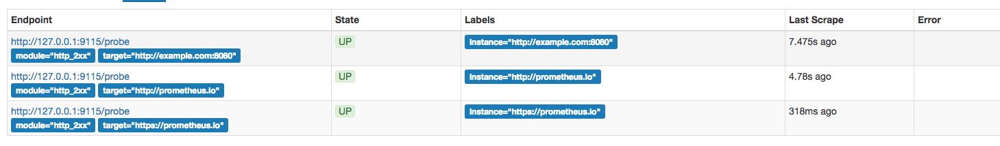

网络探测：Blackbox Exporter
在本章的前几个小节中我们主要介绍了Prometheus下如何进行白盒监控，我们监控主机的资源用量、容器的运行状态、数据库中间件的运行数据。 这些都是支持业务和服务的基础设施，通过白盒能够了解其内部的实际运行状态，通过对监控指标的观察能够预判可能出现的问题，从而对潜在的不确定因素进行优化。而从完整的监控逻辑的角度，除了大量的应用白盒监控以外，还应该添加适当的黑盒监控。黑盒监控即以用户的身份测试服务的外部可见性，常见的黑盒监控包括HTTP探针、TCP探针等用于检测站点或者服务的可访问性，以及访问效率等。
黑盒监控相较于白盒监控最大的不同在于黑盒监控是以故障为导向当故障发生时，黑盒监控能快速发现故障，而白盒监控则侧重于主动发现或者预测潜在的问题。一个完善的监控目标是要能够从白盒的角度发现潜在问题，能够在黑盒的角度快速发现已经发生的问题。
使用Blackbox Exporter
Blackbox Exporter是Prometheus社区提供的官方黑盒监控解决方案，其允许用户通过：HTTP、HTTPS、DNS、TCP以及ICMP的方式对网络进行探测。用户可以直接使用go get命令获取Blackbox Exporter源码并生成本地可执行文件：
go get prometheus/blackbox_exporter
运行Blackbox Exporter时，需要用户提供探针的配置信息，这些配置信息可能是一些自定义的HTTP头信息，也可能是探测时需要的一些TSL配置，也可能是探针本身的验证行为。在Blackbox Exporter每一个探针配置称为一个module，并且以YAML配置文件的形式提供给Blackbox Exporter。 每一个module主要包含以下配置内容，包括探针类型（prober）、验证访问超时时间（timeout）、以及当前探针的具体配置项：
# 探针类型：http、 tcp、 dns、 icmp.
prober: <prober_string>
# 超时时间
[ timeout: <duration> ]
# 探针的详细配置，最多只能配置其中的一个
[ http: <http_probe> ]
[ tcp: <tcp_probe> ]
[ dns: <dns_probe> ]
[ icmp: <icmp_probe> ]
下面是一个简化的探针配置文件blockbox.yml，包含两个HTTP探针配置项：
modules:
http_2xx:
prober: http
http:
method: GET
http_post_2xx:
prober: http
http:
method: POST
通过运行以下命令，并指定使用的探针配置文件启动Blockbox Exporter实例：
blackbox_exporter --config.file=/etc/prometheus/blackbox.yml
启动成功后，就可以通过访问http://127.0.0.1:9115/probe?module=http_2xx&target=baidu.com对baidu.com进行探测。这里通过在URL中提供module参数指定了当前使用的探针，target参数指定探测目标，探针的探测结果通过Metrics的形式返回：
# HELP probe_dns_lookup_time_seconds Returns the time taken for probe dns lookup in seconds
# TYPE probe_dns_lookup_time_seconds gauge
probe_dns_lookup_time_seconds 0.011633673
# HELP probe_duration_seconds Returns how long the probe took to complete in seconds
# TYPE probe_duration_seconds gauge
probe_duration_seconds 0.117332275
# HELP probe_failed_due_to_regex Indicates if probe failed due to regex
# TYPE probe_failed_due_to_regex gauge
probe_failed_due_to_regex 0
# HELP probe_http_content_length Length of http content response
# TYPE probe_http_content_length gauge
probe_http_content_length 81
# HELP probe_http_duration_seconds Duration of http request by phase, summed over all redirects
# TYPE probe_http_duration_seconds gauge
probe_http_duration_seconds{phase="connect"} 0.055551141
probe_http_duration_seconds{phase="processing"} 0.049736019
probe_http_duration_seconds{phase="resolve"} 0.011633673
probe_http_duration_seconds{phase="tls"} 0
probe_http_duration_seconds{phase="transfer"} 3.8919e-05
# HELP probe_http_redirects The number of redirects
# TYPE probe_http_redirects gauge
probe_http_redirects 0
# HELP probe_http_ssl Indicates if SSL was used for the final redirect
# TYPE probe_http_ssl gauge
probe_http_ssl 0
# HELP probe_http_status_code Response HTTP status code
# TYPE probe_http_status_code gauge
probe_http_status_code 200
# HELP probe_http_version Returns the version of HTTP of the probe response
# TYPE probe_http_version gauge
probe_http_version 1.1
# HELP probe_ip_protocol Specifies whether probe ip protocol is IP4 or IP6
# TYPE probe_ip_protocol gauge
probe_ip_protocol 4
# HELP probe_success Displays whether or not the probe was a success
# TYPE probe_success gauge
probe_success 1
从返回的样本中，用户可以获取站点的DNS解析耗时、站点响应时间、HTTP响应状态码等等和站点访问质量相关的监控指标，从而帮助管理员主动的发现故障和问题。
与Prometheus集成
接下来，只需要在Prometheus下配置对Blockbox Exporter实例的采集任务即可。最直观的配置方式：
- job_name: baidu_http2xx_probe
params:
module:
- http_2xx
target:
- baidu.com
metrics_path: /probe
static_configs:
- targets:
- 127.0.0.1:9115
- job_name: prometheus_http2xx_probe
params:
module:
- http_2xx
target:
- prometheus.io
metrics_path: /probe
static_configs:
- targets:
- 127.0.0.1:9115
这里分别配置了名为baidu_http2x_probe和prometheus_http2xx_probe的采集任务，并且通过params指定使用的探针（module）以及探测目标（target）。
那问题就来了，假如我们有N个目标站点且都需要M种探测方式，那么Prometheus中将包含N * M个采集任务，从配置管理的角度来说显然是不可接受的。 在第7章的“服务发现与Relabel”小节，我们介绍了Prometheus的Relabeling能力，这里我们也可以采用Relabling的方式对这些配置进行简化，配置方式如下：
scrape_configs:
- job_name: 'blackbox'
metrics_path: /probe
params:
module: [http_2xx]
static_configs:
- targets:
- http://prometheus.io # Target to probe with http.
- https://prometheus.io # Target to probe with https.
- http://example.com:8080 # Target to probe with http on port 8080.
relabel_configs:
- source_labels: [__address__]
target_label: __param_target
- source_labels: [__param_target]
target_label: instance
- target_label: __address__
replacement: 127.0.0.1:9115
这里针对每一个探针服务（如http_2xx）定义一个采集任务，并且直接将任务的采集目标定义为我们需要探测的站点。在采集样本数据之前通过relabel_configs对采集任务进行动态设置。
- 第1步，根据Target实例的地址，写入
__param_target标签中。__param_<name>形式的标签表示，在采集任务时会在请求目标地址中添加<name>参数，等同于params的设置； - 第2步，获取__param_target的值，并覆写到instance标签中；
- 第3步，覆写Target实例的
__address__标签值为BlockBox Exporter实例的访问地址。
通过以上3个relabel步骤，即可大大简化Prometheus任务配置的复杂度:

接下来，我们将详细介绍Blackbox中常用的HTTP探针使用方式
HTTP探针
HTTP探针是进行黑盒监控时最常用的探针之一，通过HTTP探针能够网站或者HTTP服务建立有效的监控，包括其本身的可用性，以及用户体验相关的如响应时间等等。除了能够在服务出现异常的时候及时报警，还能帮助系统管理员分析和优化网站体验。
在上一小节讲过，Blockbox Exporter中所有的探针均是以Module的信息进行配置。如下所示，配置了一个最简单的HTTP探针：
modules:
http_2xx_example:
prober: http
http:
通过prober配置项指定探针类型。配置项http用于自定义探针的探测方式，这里有没对http配置项添加任何配置，表示完全使用HTTP探针的默认配置，该探针将使用HTTP GET的方式对目标服务进行探测，并且验证返回状态码是否为2XX，是则表示验证成功，否则失败。
自定义HTTP请求
HTTP服务通常会以不同的形式对外展现，有些可能就是一些简单的网页，而有些则可能是一些基于REST的API服务。 对于不同类型的HTTP的探测需要管理员能够对HTTP探针的行为进行更多的自定义设置，包括：HTTP请求方法、HTTP头信息、请求参数等。对于某些启用了安全认证的服务还需要能够对HTTP探测设置相应的Auth支持。对于HTTPS类型的服务还需要能够对证书进行自定义设置。
如下所示，这里通过method定义了探测时使用的请求方法，对于一些需要请求参数的服务，还可以通过headers定义相关的请求头信息，使用body定义请求内容：
http_post_2xx:
prober: http
timeout: 5s
http:
method: POST
headers:
Content-Type: application/json
body: '{}'
如果HTTP服务启用了安全认证，Blockbox Exporter内置了对basic_auth的支持，可以直接设置相关的认证信息即可：
http_basic_auth_example:
prober: http
timeout: 5s
http:
method: POST
headers:
Host: "login.example.com"
basic_auth:
username: "username"
password: "mysecret"
对于使用了Bear Token的服务也可以通过bearer_token配置项直接指定令牌字符串，或者通过bearer_token_file指定令牌文件。
对于一些启用了HTTPS的服务，但是需要自定义证书的服务，可以通过tls_config指定相关的证书信息：
http_custom_ca_example:
prober: http
http:
method: GET
tls_config:
ca_file: "/certs/my_cert.crt"
自定义探针行为
在默认情况下HTTP探针只会对HTTP返回状态码进行校验，如果状态码为2XX（200 <= StatusCode < 300）则表示探测成功，并且探针返回的指标probe_success值为1。
如果用户需要指定HTTP返回状态码，或者对HTTP版本有特殊要求，如下所示，可以使用valid_http_versions和valid_status_codes进行定义：
http_2xx_example:
prober: http
timeout: 5s
http:
valid_http_versions: ["HTTP/1.1", "HTTP/2"]
valid_status_codes: []
默认情况下，Blockbox返回的样本数据中也会包含指标probe_http_ssl，用于表明当前探针是否使用了SSL：
# HELP probe_http_ssl Indicates if SSL was used for the final redirect
# TYPE probe_http_ssl gauge
probe_http_ssl 0
而如果用户对于HTTP服务是否启用SSL有强制的标准。则可以使用fail_if_ssl和fail_if_not_ssl进行配置。fail_if_ssl为true时，表示如果站点启用了SSL则探针失败，反之成功。fail_if_not_ssl刚好相反。
http_2xx_example:
prober: http
timeout: 5s
http:
valid_status_codes: []
method: GET
no_follow_redirects: false
fail_if_ssl: false
fail_if_not_ssl: false
除了基于HTTP状态码，HTTP协议版本以及是否启用SSL作为控制探针探测行为成功与否的标准以外，还可以匹配HTTP服务的响应内容。使用fail_if_matches_regexp和fail_if_not_matches_regexp用户可以定义一组正则表达式，用于验证HTTP返回内容是否符合或者不符合正则表达式的内容。
http_2xx_example:
prober: http
timeout: 5s
http:
method: GET
fail_if_matches_regexp:
- "Could not connect to database"
fail_if_not_matches_regexp:
- "Download the latest version here"
最后需要提醒的时，默认情况下HTTP探针会走IPV6的协议。 在大多数情况下，可以使用preferred_ip_protocol=ip4强制通过IPV4的方式进行探测。在Bloackbox响应的监控样本中，也会通过指标probe_ip_protocol，表明当前的协议使用情况：
# HELP probe_ip_protocol Specifies whether probe ip protocol is IP4 or IP6
# TYPE probe_ip_protocol gauge
probe_ip_protocol 6
除了支持对HTTP协议进行网络探测以外，Blackbox还支持对TCP、DNS、ICMP等其他网络协议，感兴趣的读者可以从Blackbox的Github项目中获取更多使用信息。